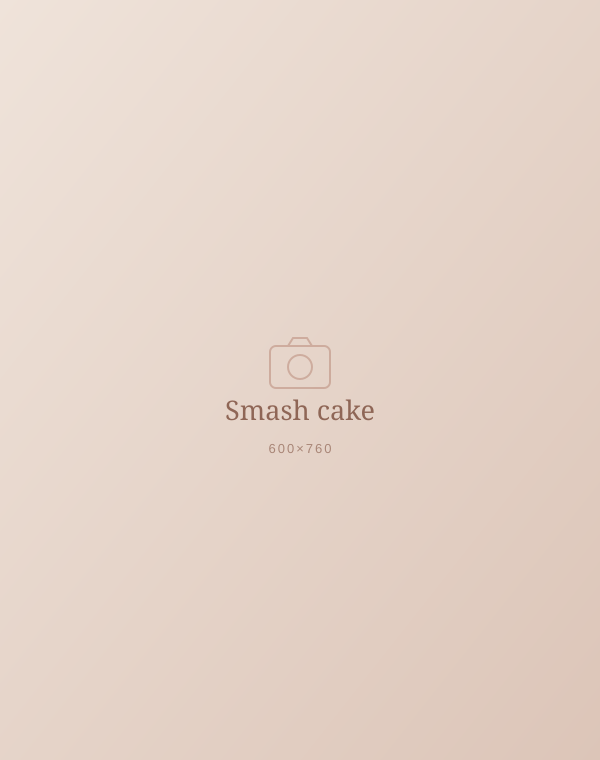

Su primer cumpleaños
Smash cake
Cada etapa es única. Celebramos su primer año con una sesión divertida y llena de vida: curioso, divertido y tal y como es.

La sesión smash cake es la forma más divertida de celebrar su primer cumpleaños. Preparo un decorado especial y dejamos que descubra su tarta a su manera: con las manos, con la cara… ¡como quiera!
La sesión se divide en dos partes: una primera sin tarta, con fotos más tranquilas, y una segunda con la tarta. Como opción, podemos terminar con un baño de leche y fotos con la familia y los hermanos.
Pequeñas risas, grandes recuerdos.
Qué incluye
- Decorado temáticoDiseñado para la ocasión y adaptado a vuestros gustos.
- Dos partesPrimero fotos sin tarta y después… ¡la tarta!
- Baño de leche (opcional)Un final perfecto para limpiar y seguir disfrutando.
- Fotografías editadasEdición cuidada a mano, natural y atemporal, en alta resolución.
- Galería online privadaPara ver, descargar y compartir tus fotos con la familia.
Preguntas frecuentes
Todo lo que necesitas saber
¿Cuándo se realiza la sesión de fotos?
Alrededor de su primer cumpleaños, entre los 11 y los 13 meses.
¿Cuándo hay que reservar?
Con 1 o 2 meses de antelación para asegurar la fecha y preparar el decorado con tiempo.
¿Cuánto dura la sesión?
Aproximadamente 1 hora y media, contando las dos partes de la sesión y el baño de leche si lo elegís.
¿Quién puede participar?
El protagonista es el bebé, pero papás y hermanos pueden unirse al final de la sesión para hacer fotos en familia.
¿Tengo que llevar algo a mi sesión de fotos?
Del decorado y el atrezo me encargo yo. Os recomiendo traer un conjunto cómodo para la primera parte, ropa de cambio, toallitas y su agua o merienda. Antes de la sesión os envío una guía con todos los detalles.
¿Quién se encarga de la tarta?
Me encargo yo de que la tarta esté lista y combine con el decorado de la sesión. Si preferís traerla vosotros, también es posible: lo hablamos al reservar.
Alergias e intolerancias
Avísame al hacer la reserva de cualquier alergia o intolerancia. La tarta se adapta (sin gluten, sin lactosa, sin huevo…) o podéis traer una que ya conozcáis. Nunca se le da nada al bebé sin vuestra aprobación.
¿Hablamos de tu sesión?
Reserva por WhatsApp